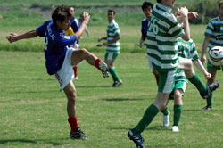

|
Misato, Sun 3rd Sept. The Celts got their season off to a flying start with a well deserved win over the French. When the fixture was first made, not too many fancied the 10am kick off in Misato on a Sunday morning, but the way things panned out the Celts were happy to get out of the searing heat with 3 points.
Despite missing a number of key players, including last seasons top scorer, and Ruairi & Gav's new management technique of not bothering to do a warm up for fear the lads would have to get there on time the Celts started well and carved open a number of clearcut opportunities with Soh and Roberto going close. 15 minutes in and the Celts scored their first ever goal in Div 1 of the TML. Soh broke through as the French offside trap failed as miserably as Marco Matterazzi's acting lessons and slotted past the bemused French keeper.
This seemed to wake up the French, who started to put more agression to their game, seemingly thinking that shirt pulling is only ok when they are the ones doing it. The Celts thought they had gone 2 up when a header from Gav at a corner was fumbled over the line by the French keeper, and it seemed everyone but the referee and the French linesman could see it was at least a foot over the line. However the decision wasnt given and whilst the Celts argued in vain, and stupidly, the French broke up the field and scored with a cracking shot from the left side of the penalty box straight into the top corner. Disappointing for the Celts who had dominated, and having had 4 1-on-1's before that and a goal that wasnt given, we were back to square one. A sign of things to come in Div 1?
To their credit, the Celts kept playing their football, with Roberto and Dermot pulling strings in midfield, Seamus and Wayne combining well down the right. They got a deserved second when Wayno flew down the right wing won a hard but 50/50 challenge to pull the ball across the box to Neil, who slotted home neatly. No more than the Celts deserved. A couple of lapses in concentration at the back almost allowed the French back in, but Aki and the 2 Bens kept them out til half time.
The second half began in the same way as the first, with the Celts holding the majority of posession. France had begun the second half with one of their better players running the touchline, which was surprising. However, the reason became clear as the half progressed where an obvious right shoulder injury prevented him from pointing the flag in any direction that didnt benefit his team. He was in fact multi-tasking, along with being the linesman, he was a coach, manager and at times it seemed wanted to referee too. Combined with playing the first half it was a busy day all round so we hope he enjoyed his repos merite later!!
 As they Celts began to tire in the heat, and make some unforced errors the french had a couple of chances that Aki did well to keep out. The game was made safe with 20 minutes to go when Roberto, adding a morning of Italian torment to the summer long pain for the French, dazzled along the touchline pulled the ball back and Neill smashed the ball to the roof of the net. 3-1 and the points were in the bag.
All in all a good days work, but the Celts know that as they come up against better teams, Div 1 will get harder. We hope to have all of our players available by then and cut out some of the basic errors we made. Should be an interesting season!.
Report – Ruairi Hatchell
|